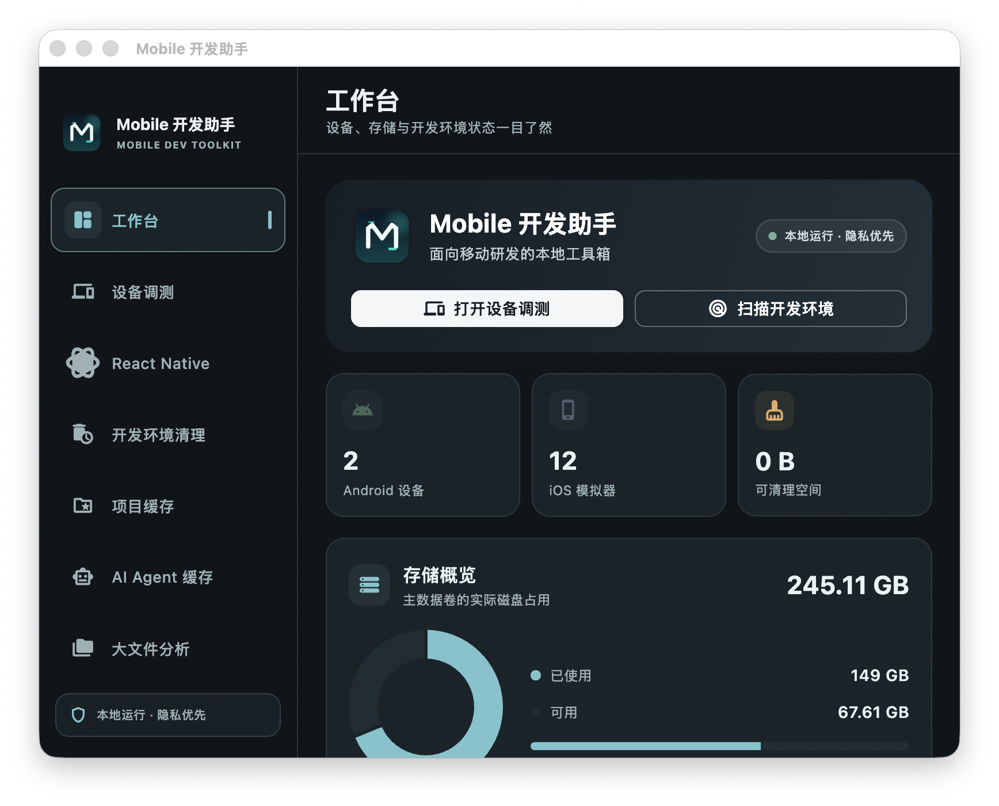
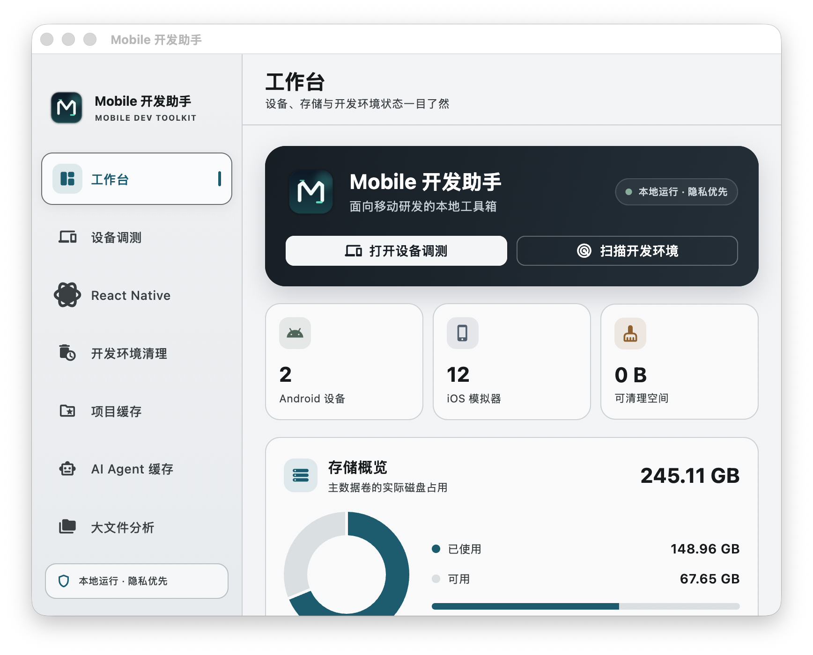

01
设备调测
管理 Android AVD、真机、iOS Simulator，使用 ADB、Logcat、截图、APK 和 `.app` 安装等常用工具。
一款本地优先的 macOS 工具，集中管理 Android、iOS、React Native 和开发环境缓存。默认中文，数据留在本机。

从模拟器启动到缓存清理，从 RN 命令到 APK 安装，把重复的终端拼接工作收拢起来。
管理 Android AVD、真机、iOS Simulator，使用 ADB、Logcat、截图、APK 和 `.app` 安装等常用工具。
识别项目、观察 Metro、快捷运行 `yarn android`、`yarn ios`、`yarn charles`，并打开常用 IDE。
检索 Flutter、Android、iOS、RN、Web 和 AI Agent 缓存。只处理可重建资源，清理前明确确认。
检查 AVD 描述、系统镜像、电脑键盘和离线锁文件。修复前自动备份，不删除用户数据和快照。
电脑与 Android 双向复制，支持中文和特殊字符，适合登录、调试参数和长文本输入。
项目路径、日志和剪贴板不上传。中英文界面、深色模式和可配置安全边界都在本机完成。
保留终端能力，但把选择设备、确认范围和查看状态变得更清楚。
flutter pub get
flutter run -d macos
# build release DMG
bash scripts/build_dmg.sh浅色适合日常浏览，深色适合长时间调测；两套主题共享同一套信息层级。

macOS DMG，ad-hoc 签名。首次打开请按系统提示右键选择“打开”。